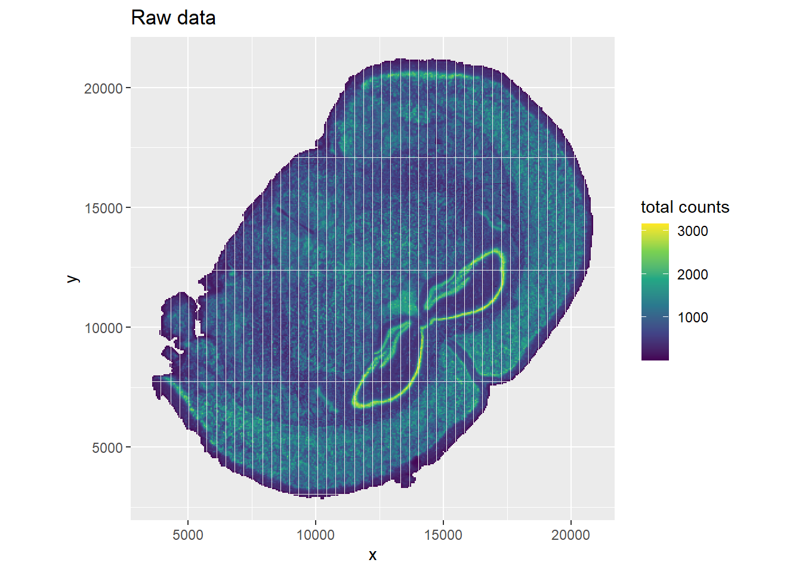
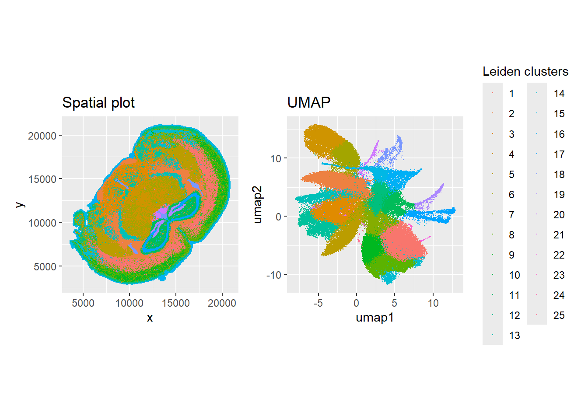
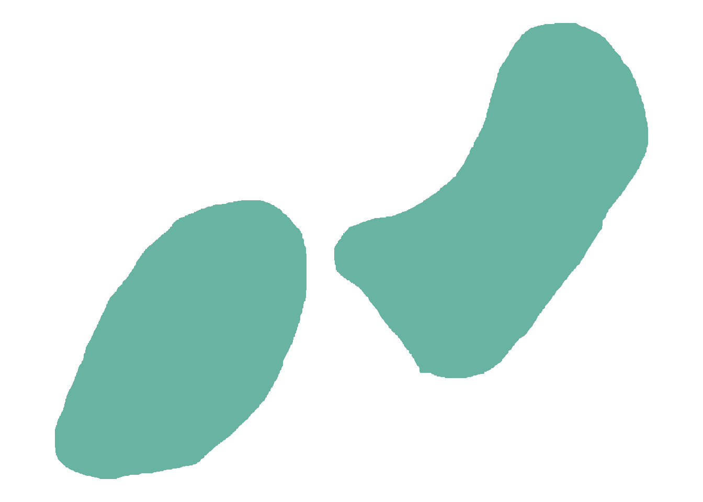
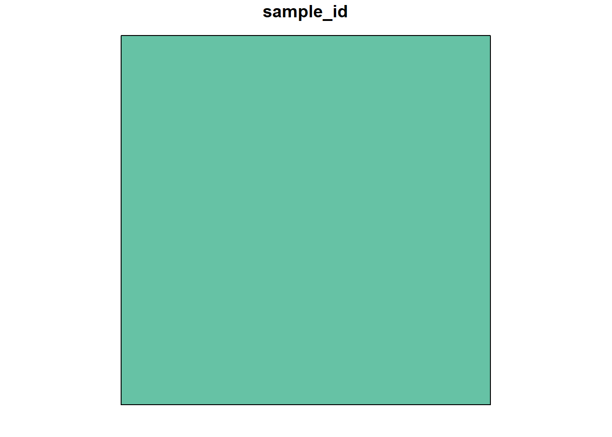
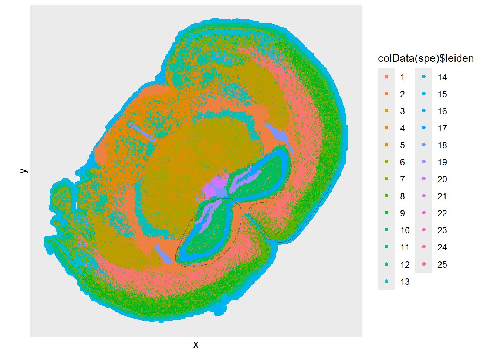
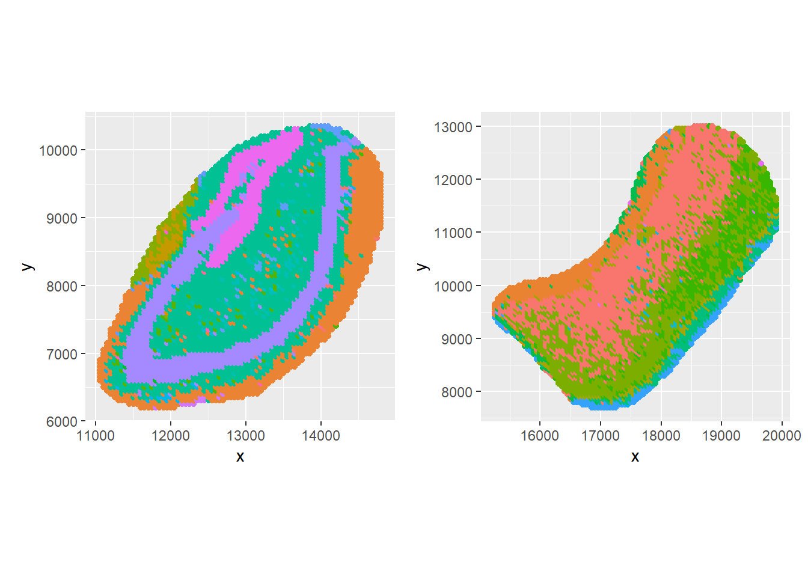
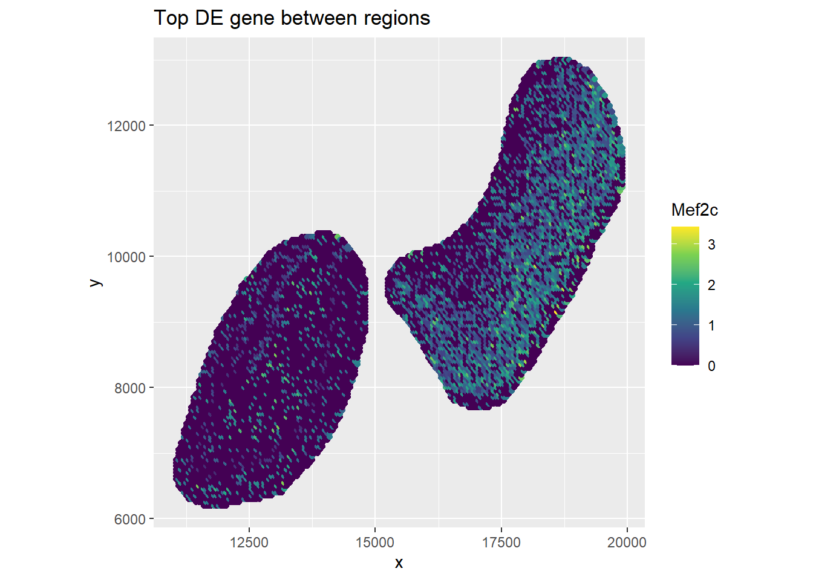

Last updated: 2024-11-20
Checks: 6 1
Knit directory: asi_spatial_workshop_2024/
This reproducible R Markdown analysis was created with workflowr (version 1.7.1). The Checks tab describes the reproducibility checks that were applied when the results were created. The Past versions tab lists the development history.
The R Markdown file has unstaged changes. To know which version of
the R Markdown file created these results, you’ll want to first commit
it to the Git repo. If you’re still working on the analysis, you can
ignore this warning. When you’re finished, you can run
wflow_publish to commit the R Markdown file and build the
HTML.
Great job! The global environment was empty. Objects defined in the global environment can affect the analysis in your R Markdown file in unknown ways. For reproduciblity it’s best to always run the code in an empty environment.
The command set.seed(20240925) was run prior to running
the code in the R Markdown file. Setting a seed ensures that any results
that rely on randomness, e.g. subsampling or permutations, are
reproducible.
Great job! Recording the operating system, R version, and package versions is critical for reproducibility.
Nice! There were no cached chunks for this analysis, so you can be confident that you successfully produced the results during this run.
Great job! Using relative paths to the files within your workflowr project makes it easier to run your code on other machines.
Great! You are using Git for version control. Tracking code development and connecting the code version to the results is critical for reproducibility.
The results in this page were generated with repository version d159369. See the Past versions tab to see a history of the changes made to the R Markdown and HTML files.
Note that you need to be careful to ensure that all relevant files for
the analysis have been committed to Git prior to generating the results
(you can use wflow_publish or
wflow_git_commit). workflowr only checks the R Markdown
file, but you know if there are other scripts or data files that it
depends on. Below is the status of the Git repository when the results
were generated:
Ignored files:
Ignored: .Rhistory
Ignored: .Rproj.user/
Ignored: xenium/
Untracked files:
Untracked: stomics/
Untracked: visium/
Unstaged changes:
Modified: analysis/index.Rmd
Modified: analysis/stomics_01_intro.Rmd
Modified: analysis/stomics_02_basics.Rmd
Modified: analysis/stomics_03_analysis.Rmd
Note that any generated files, e.g. HTML, png, CSS, etc., are not included in this status report because it is ok for generated content to have uncommitted changes.
These are the previous versions of the repository in which changes were
made to the R Markdown (analysis/stomics_02_basics.Rmd) and
HTML (docs/stomics_02_basics.html) files. If you’ve
configured a remote Git repository (see ?wflow_git_remote),
click on the hyperlinks in the table below to view the files as they
were in that past version.
| File | Version | Author | Date | Message |
|---|---|---|---|---|
| Rmd | 818a4e9 | John Salamon | 2024-11-18 | changes to make html more readable |
| Rmd | e9213d9 | John Salamon | 2024-11-18 | Merge stomics commits |
| Rmd | 0a0195c | John Salamon | 2024-11-18 | more details |
| Rmd | 35f3e03 | John Salamon | 2024-11-17 | some more explainations |
| Rmd | e71a46b | John Salamon | 2024-11-17 | add some geometry manipulation |
| Rmd | ff451dc | John Salamon | 2024-11-17 | updates |
| Rmd | 997618e | John Salamon | 2024-11-16 | making some adjustments |
# object for holding spatial / single cell data
# hide some output
suppressMessages(library(SpatialExperiment))
library(SpatialExperiment)
library(SpatialFeatureExperiment)
Attaching package: 'SpatialFeatureExperiment'The following object is masked from 'package:base':
scale# read HDF5 archives
library(rhdf5)
# single-cell tools
library(scran) Loading required package: scuttlelibrary(scater) Loading required package: ggplot2
Attaching package: 'ggplot2'The following object is masked from 'package:SpatialFeatureExperiment':
unit# plotting
library(ggplot2)
library(patchwork)
# geospatial simple features
library(sf)Linking to GEOS 3.12.2, GDAL 3.9.3, PROJ 9.4.1; sf_use_s2() is TRUE# custom functions
source("code/stomicsFunctions.R")
Attaching package: 'Matrix'The following object is masked from 'package:S4Vectors':
expandOne of the first hurdles to analyse STOmics data in R getting it into a suitable format. Our SAW outputs use the AnnData format, which is more commonly used with Python. For use in R, we will need to convert it into a different format - the two that we’ll be considering here are a Seurat or SpatialExperiment object.
Seurat is an very popular library for single cell and spatial transcriptomics, which we’ve been using extensively this morning.
SpatialExperiment (SPE) is a package for management of spatial transcriptomicsdata, which integrates well with the Bioconductor ecosystem.
It is an extension of SingleCellExperiment (SCE), and is extended by SpatialFeatureExperiment (SFE), which also adds advanced geometric operations and integration with geospatial libraries.
Unfortunately, there are many options, none of them quite perfect. Here are the ones that I know of:
reticulate based package (calls into Python from
R)
anndata
from CRANschard
rhdf5 code
For this workshop, I’ve put all the loading code into an external
script, stomicsFunctions.R. You don’t need to worry too
much about the details, and this should work with the current versions
of SAW.
Even if you’re just going to use a library to handle opening these files, it’s useful to have a general understanding of what they contain. Let’s take a look at some of the most common SAW outputs.
We’ll be going through the outputs of
visualization.tar.gz. If you haven’t downloaded this file,
don’t worry,
.gef files contain the original expression matrix, and
are typically large. They will contain both the raw (non-binned)
expression matrices, and multiple binned matrices.
While these are just HDF5 files (so you can inspect it with
h5ls), it is difficult to process directly in R.
# Note, this is only in the optional downloads. Don't worry if you didn't download it.
input_file <- "stomics/raw/visualization/C04042E3.tissue.gef"
# We can look inside the gef. However, it's not in a format we can directly use.
counts <- h5read(input_file, "/geneExp/bin50/gene")
# We can just sort through the features (noting the prevalence of mitochondrial genes).
head(counts[order(counts$count, decreasing=T),]) geneID geneName offset count
35774 ENSMUSG00000119584.1 Rn18s-rs5 53367288 83857
16677 ENSMUSG00000064339.1 mt-Rnr2 47245621 83237
11737 ENSMUSG00000040828.11 Catsperd 36698772 82066
13975 ENSMUSG00000049775.17 Tmsb4x 41052367 78277
11377 ENSMUSG00000039883.6 Lrrc17 35692930 76977
16675 ENSMUSG00000064337.1 mt-Rnr1 47135308 76552The main SAW outputs we can access easily from R or Python are
.h5ad files. These files are in AnnData format, and contain
both a binned count matrix, plus other analysis outputs created by SAW
(such as cluster annotations, UMAP embeddings, etc).
I’ve just used the rhdf5 library to read in these files.
Pre-normalisation matrices can be found under “/raw/X”, and are usually
in a compressed format. This is fairly easy to convert into a format R
can read. (Check the code/stomicsFunctions.R file to see
how h5adMatrixLoad was implemented).
Try using the h5ls function to see the names of the
subgroups in this input.
# We can free up memory by removing those counts
rm(counts)
# Let's load an h5ad instead
h5ad_file <- "stomics/raw/visualization/C04042E3.bin50_1.0.h5ad"
# Read in the matrix data (CSR format)
matrix_data <- h5adMatrixLoad(h5ad_file, "/raw/X")Matrix is in CSR format, performing conversion# Check shape of matrix
dim(matrix_data)[1] 52825 84193AnnData files also contain extra metadata that can map nicely onto the SpatialExperiment object.
# in anndata features (here, genes) are stored as "var", and are columns
rowdata <- anndataDataframe(h5ad_file, "var")
head(rowdata) dispersions dispersions_norm highly_variable mean_umi
ENSMUSG00000000001.5 5.709944 6.2306051 TRUE 1.176044
ENSMUSG00000000003.16 2.465295 -0.6087178 FALSE 1.022222
ENSMUSG00000000028.16 2.666915 -0.1491199 FALSE 1.016949
ENSMUSG00000000031.20 3.788633 2.4078556 TRUE 1.294118
ENSMUSG00000000037.18 4.178954 3.2975990 TRUE 1.105263
ENSMUSG00000000049.12 2.980576 0.5658757 FALSE 1.188889
means n_cells n_counts real_gene_name
ENSMUSG00000000001.5 0.38339630 2755 3240 Gnai3
ENSMUSG00000000003.16 0.00549083 45 46 Pbsn
ENSMUSG00000000028.16 0.01603542 118 120 Cdc45
ENSMUSG00000000031.20 0.01207459 34 44 H19
ENSMUSG00000000037.18 0.01337080 76 84 Scml2
ENSMUSG00000000049.12 0.01391005 90 107 Apoh# in anndata observations (here, spots) are stored as "obs", and are rows
coldata <- anndataDataframe(h5ad_file, "obs")
head(coldata) leiden n_genes_by_counts orig.ident pct_counts_mt total_counts
15461882273150 15 23 sample 0 26
15461882273200 15 53 sample 0 61
15461882273250 15 84 sample 0 106
15461882273300 15 98 sample 0 118
15461882273350 15 125 sample 0 145
15461882273400 15 109 sample 0 119We can see that the umap and PCA embeddings are stored under /obsm:
# h5ls(h5ad_file)
# Let's extract the umap
umap <- h5adMatrixLoad(h5ad_file, "/obsm/X_umap", sparse=F)Matrix already in dense formatumap <- data.frame(umap1 = umap[1,], umap2 = umap[2,], row.names = rownames(coldata))Importantly, the actual spatial coordinates are also stored here:
# Read in spatial information, convert to the way SpatialExperiment prefers
spatial_coords <- h5read(h5ad_file, "/obsm/spatial")
spatial_coords <- data.matrix(data.frame(
x=spatial_coords[1,],
y=spatial_coords[2,],
row.names = rownames(coldata)
))Putting it all together, we can create a SpatialExperiment object:
spe <- SpatialExperiment(
assays = list(counts = matrix_data),
reducedDims = list(umap = umap),
colData = coldata, # spatial bins
rowData = rowdata, # features
spatialCoords = spatial_coords
)Now we can use any tools compatible with this ecosystem. For example, some basic quick log normalisation:
spe <- logNormCounts(spe)We can plot with ggplot:
ggplot(spatialCoords(spe), aes(x, y, color = colData(spe)$total_counts)) +
geom_point(size = 0.1) +
theme(aspect.ratio=1) +
scale_color_viridis_c() +
labs(
title = "Raw data",
color = "total counts"
)
Let’s try plotting the UMAP embeddings side by side with the spatial plot. We can also highlight the Leiden clusters.
# Let's plot the UMAP
spatial_plot <- ggplot(spatialCoords(spe), aes(x, y, color = colData(spe)$leiden)) +
geom_point(size = 0.1) +
theme(aspect.ratio=1) +
scale_color_discrete(guide = "none") +
ggtitle("Spatial plot")
umap_plot <- ggplot(reducedDims(spe)$umap, aes(umap1, umap2, color = colData(spe)$leiden)) +
geom_point(size = 0.1) +
theme(aspect.ratio=1) +
scale_color_discrete() +
labs(
title = "UMAP",
color = "Leiden clusters"
)
spatial_plot + umap_plot
In StereoMap (and other spatial software), we can annotate regions
and export as GeoJSON. The sf library can be used to read
these into R.
geojson <- "stomics/raw/C04042E3_20241117151457.lasso.geojson"
sf_object <- read_sf(geojson, crs = NA)Warning in CPL_read_ogr(dsn, layer, query, as.character(options), quiet, : GDAL
Message 1: Non closed ring detected. To avoid accepting it, set the
OGR_GEOMETRY_ACCEPT_UNCLOSED_RING configuration option to NO
Warning in CPL_read_ogr(dsn, layer, query, as.character(options), quiet, : GDAL
Message 1: Non closed ring detected. To avoid accepting it, set the
OGR_GEOMETRY_ACCEPT_UNCLOSED_RING configuration option to NOpolygons <- st_collection_extract(sf_object)
polygons$sample_id <- "sample01"
# Can just plot these normally too
# plot(sf_object$geometry, col = "grey")
ggplot(polygons) +
geom_sf(fill = "#69b3a2", color = "white") +
coord_sf(datum=NA) +
theme_void()
Unfortunately, the polygons we export from SAW aren’t “closed”, i.e.,
the first and last points are not the same. This causes some issues with
the sf library so I’m just going to clean these up slightly
(see the source for closePolygon in the file
code/stomicsFunctions.R).
region_1 <- closePolygon(polygons[1,])
region_2 <- closePolygon(polygons[2,])In case that didn’t work, here’s an example of generating a valid polygonal region (just a simple square):
# Make a test square region using the sf library
st <- 10000
si <- 5000
en <- st + si
geom <- st_polygon(list(matrix(
c(st, st, # Bottom-left
en, st, # Bottom-right
en, en, # Top-right
st, en, # Top-left
st, st), # Back to Bottom-left to close
ncol = 2, byrow = TRUE
)))
polygon_data <- data.frame(
sample_id = "sample01"
)
polygon_sf <- st_sf(polygon_data, geometry = st_sfc(geom))
plot(polygon_sf) ## SpatialFeatureExperiment
Next, let’s upgrade to a SpatialFeatureExperiment, which includes functions to manipulate our data with geometries.
# Our SpatialExperiment can just be with some region annotations.
sfe <- toSpatialFeatureExperiment(spe,
annotGeometries = list(
region_1 = region_1,
region_2 = region_2
),
)
sfeclass: SpatialFeatureExperiment
dim: 52825 84193
metadata(0):
assays(2): counts logcounts
rownames(52825): ENSMUSG00000000001.5 ENSMUSG00000000003.16 ...
ENSMUSG00002076984.1 ENSMUSG00002076988.1
rowData names(8): dispersions dispersions_norm ... n_counts
real_gene_name
colnames(84193): 15461882273150 15461882273200 ... 89550068136200
89550068136250
colData names(7): leiden n_genes_by_counts ... sample_id sizeFactor
reducedDimNames(1): umap
mainExpName: NULL
altExpNames(0):
spatialCoords names(2) : x y
imgData names(1): sample_id
unit:
Geometries:
colGeometries: centroids (POINT)
annotGeometries: region_1 (POLYGON), region_2 (POLYGON)
Graphs:
sample01: Let’s plot those regions:
ggplot() +
geom_point(data = spatialCoords(spe), aes(x, y, color = colData(spe)$leiden)) +
geom_sf(data = annotGeometry(sfe, "region_1"), fill = NA) +
geom_sf(data = annotGeometry(sfe, "region_2"), fill = NA) +
coord_sf(datum=NA) +
scale_color_discrete() +
theme(aspect.ratio=1)
Sometimes we might want to extract those regions out into separate
objects. Noe that we have a SpatialFeatureExperiment object, one way to
accomplish this is with the crop function.
# Crop our sfe by each annotated region
sfe_r1 <- crop(sfe, annotGeometry(sfe, "region_1"))Warning in min(bb[, 1L], na.rm = TRUE): no non-missing arguments to min;
returning InfWarning in min(bb[, 2L], na.rm = TRUE): no non-missing arguments to min;
returning InfWarning in max(bb[, 3L], na.rm = TRUE): no non-missing arguments to max;
returning -InfWarning in max(bb[, 4L], na.rm = TRUE): no non-missing arguments to max;
returning -Infsfe_r2 <- crop(sfe, annotGeometry(sfe, "region_2"))Warning in min(bb[, 1L], na.rm = TRUE): no non-missing arguments to min;
returning InfWarning in min(bb[, 2L], na.rm = TRUE): no non-missing arguments to min;
returning InfWarning in max(bb[, 3L], na.rm = TRUE): no non-missing arguments to max;
returning -InfWarning in max(bb[, 4L], na.rm = TRUE): no non-missing arguments to max;
returning -Inf# Visualise the two regions
r1_plot <- ggplot() +
geom_point(data = spatialCoords(sfe_r1), aes(x, y, color = colData(sfe_r1)$leiden)) +
scale_color_discrete(guide = "none") +
theme(aspect.ratio=1)
r2_plot <- ggplot() +
geom_point(data = spatialCoords(sfe_r2), aes(x, y, color = colData(sfe_r2)$leiden)) +
scale_color_discrete(guide = "none") +
theme(aspect.ratio=1)
r1_plot + r2_plot
While SAW does have a feature to perform differential expression analysis with these regions, it’s nice to be able to do the same analysis in R.
First, let’s just do a simple t-test using the
findMarkers function:
# Create a "region" group for analysis
colData(sfe)$region <- 0 # 0 will be default, no region
colData(sfe)$region[annotPred(sfe, annotGeometryName = "region_1")] <- 1
colData(sfe)$region[annotPred(sfe, annotGeometryName = "region_2")] <- 2
# Subset the sfe
sfe_regions <- sfe[, colData(sfe)$region != 0]
# Test for marker genes
markers <- findMarkers(sfe_regions, test = "t", groups = sfe_regions$region)
# Show table
head(markers[[1]])DataFrame with 6 rows and 5 columns
Top p.value FDR summary.logFC
<integer> <numeric> <numeric> <numeric>
ENSMUSG00000005583.17 1 1.15665e-314 6.10998e-310 -0.498215
ENSMUSG00000033161.11 2 4.31883e-267 1.14071e-262 -0.646273
ENSMUSG00000036815.18 3 3.06313e-198 5.39366e-194 -0.379140
ENSMUSG00000028785.14 4 5.64265e-198 7.45183e-194 0.510118
ENSMUSG00000027273.14 5 1.00848e-196 1.06546e-192 -0.525824
ENSMUSG00000054459.9 6 1.70954e-194 1.50510e-190 -0.398229
logFC.2
<numeric>
ENSMUSG00000005583.17 -0.498215
ENSMUSG00000033161.11 -0.646273
ENSMUSG00000036815.18 -0.379140
ENSMUSG00000028785.14 0.510118
ENSMUSG00000027273.14 -0.525824
ENSMUSG00000054459.9 -0.398229We might then want to plot the expression of a selected gene in these regions
# check
# hist(colSums(assays(sfe_r1[rownames(markers[[1]])[1], ])$counts))
# Function to return the counts of a particular gene
geneCount <- function(spe_obj, gene, assay="counts") {
m <- assays(spe_obj)[[assay]]
return( m[gene,] )
}
gene <- rownames(markers[[1]])[1]
ggplot() +
geom_point(data = spatialCoords(sfe_regions),
aes(x, y, color = geneCount(sfe_regions, gene, assay="logcounts"))) +
scale_color_viridis_c() +
theme(aspect.ratio=1) +
labs(
title = "Top DE gene between regions",
color = rowData(sfe[gene,])$real_gene_name
)
sessionInfo()R version 4.4.2 (2024-10-31 ucrt)
Platform: x86_64-w64-mingw32/x64
Running under: Windows 11 x64 (build 22631)
Matrix products: default
locale:
[1] LC_COLLATE=English_Australia.utf8 LC_CTYPE=English_Australia.utf8
[3] LC_MONETARY=English_Australia.utf8 LC_NUMERIC=C
[5] LC_TIME=English_Australia.utf8
time zone: Australia/Adelaide
tzcode source: internal
attached base packages:
[1] stats4 stats graphics grDevices utils datasets methods
[8] base
other attached packages:
[1] Matrix_1.7-1 sf_1.0-19
[3] patchwork_1.3.0 scater_1.34.0
[5] ggplot2_3.5.1 scran_1.34.0
[7] scuttle_1.16.0 rhdf5_2.50.0
[9] SpatialFeatureExperiment_1.8.2 SpatialExperiment_1.16.0
[11] SingleCellExperiment_1.28.1 SummarizedExperiment_1.36.0
[13] Biobase_2.66.0 GenomicRanges_1.58.0
[15] GenomeInfoDb_1.42.0 IRanges_2.40.0
[17] S4Vectors_0.44.0 BiocGenerics_0.52.0
[19] MatrixGenerics_1.18.0 matrixStats_1.4.1
[21] workflowr_1.7.1
loaded via a namespace (and not attached):
[1] rstudioapi_0.17.1 jsonlite_1.8.9
[3] wk_0.9.4 magrittr_2.0.3
[5] ggbeeswarm_0.7.2 magick_2.8.5
[7] farver_2.1.2 rmarkdown_2.29
[9] fs_1.6.5 zlibbioc_1.52.0
[11] vctrs_0.6.5 spdep_1.3-6
[13] DelayedMatrixStats_1.28.0 RCurl_1.98-1.16
[15] terra_1.7-83 htmltools_0.5.8.1
[17] S4Arrays_1.6.0 BiocNeighbors_2.0.0
[19] Rhdf5lib_1.28.0 s2_1.1.7
[21] SparseArray_1.6.0 sass_0.4.9
[23] spData_2.3.3 KernSmooth_2.23-24
[25] bslib_0.8.0 htmlwidgets_1.6.4
[27] cachem_1.1.0 whisker_0.4.1
[29] igraph_2.1.1 lifecycle_1.0.4
[31] pkgconfig_2.0.3 rsvd_1.0.5
[33] R6_2.5.1 fastmap_1.2.0
[35] GenomeInfoDbData_1.2.13 digest_0.6.37
[37] colorspace_2.1-1 ps_1.8.1
[39] rprojroot_2.0.4 dqrng_0.4.1
[41] irlba_2.3.5.1 beachmat_2.22.0
[43] labeling_0.4.3 fansi_1.0.6
[45] httr_1.4.7 abind_1.4-8
[47] compiler_4.4.2 proxy_0.4-27
[49] withr_3.0.2 tiff_0.1-12
[51] BiocParallel_1.40.0 viridis_0.6.5
[53] DBI_1.2.3 HDF5Array_1.34.0
[55] R.utils_2.12.3 DelayedArray_0.32.0
[57] rjson_0.2.23 classInt_0.4-10
[59] bluster_1.16.0 tools_4.4.2
[61] units_0.8-5 vipor_0.4.7
[63] beeswarm_0.4.0 httpuv_1.6.15
[65] R.oo_1.27.0 glue_1.8.0
[67] callr_3.7.6 EBImage_4.48.0
[69] rhdf5filters_1.18.0 promises_1.3.0
[71] grid_4.4.2 getPass_0.2-4
[73] cluster_2.1.6 generics_0.1.3
[75] gtable_0.3.6 R.methodsS3_1.8.2
[77] class_7.3-22 data.table_1.16.2
[79] BiocSingular_1.22.0 ScaledMatrix_1.14.0
[81] metapod_1.14.0 sp_2.1-4
[83] utf8_1.2.4 XVector_0.46.0
[85] ggrepel_0.9.6 pillar_1.9.0
[87] stringr_1.5.1 limma_3.62.1
[89] later_1.3.2 dplyr_1.1.4
[91] lattice_0.22-6 deldir_2.0-4
[93] tidyselect_1.2.1 locfit_1.5-9.10
[95] sfheaders_0.4.4 knitr_1.49
[97] git2r_0.35.0 gridExtra_2.3
[99] edgeR_4.4.0 xfun_0.49
[101] statmod_1.5.0 DropletUtils_1.26.0
[103] stringi_1.8.4 UCSC.utils_1.2.0
[105] fftwtools_0.9-11 yaml_2.3.10
[107] boot_1.3-31 evaluate_1.0.1
[109] codetools_0.2-20 tibble_3.2.1
[111] cli_3.6.3 munsell_0.5.1
[113] processx_3.8.4 jquerylib_0.1.4
[115] Rcpp_1.0.13-1 zeallot_0.1.0
[117] png_0.1-8 parallel_4.4.2
[119] jpeg_0.1-10 sparseMatrixStats_1.18.0
[121] bitops_1.0-9 viridisLite_0.4.2
[123] scales_1.3.0 e1071_1.7-16
[125] crayon_1.5.3 rlang_1.1.4